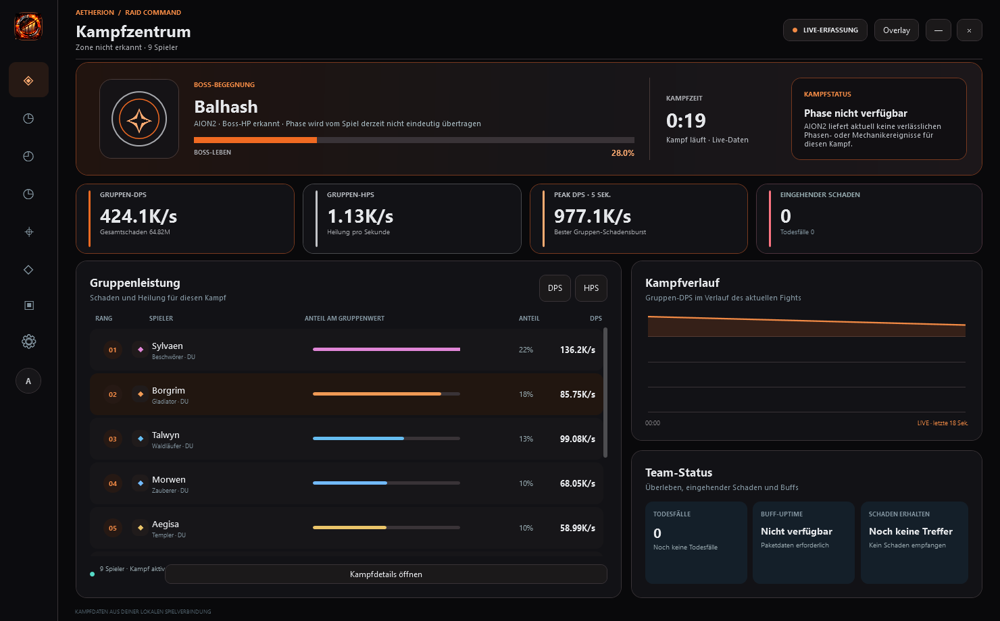

Aetherion · Saisonaler Patch VORSCHAU · 0.3.42
Schwarz. Glut-Orange. Silber.
Das aktuelle Raid-Command-Dashboard in Schwarz, Glut-Orange und Silber – plus der überarbeitete Timer.
Startansicht · Raid Command
Die echte Startansicht mit Kampfstatus, Boss-Lebensbalken, Gruppen-DPS/HPS, Schadensverlauf und Team-Status.


Timer in deiner Nähe
Logo-Branding, klare Countdown-Akzente und kompakte Event-Zeilen. Die Fensterkopfzeile ist zum Ziehen nutzbar.

Was im Patch enthalten ist
- Neue Markenfarben Schwarz, Glut-Orange und Silber mit dem bereitgestellten Aetherion-Emblem in der Startansicht und im Timer.
- Unbekannte IDs aus entfernten Bosskämpfen bleiben ausgeblendet. Sobald AION den echten Spielernamen meldet, erscheint die Zeile normal.
- Der Timer lässt sich an der ganzen Kopfzeile verschieben; Klicks auf Regler und Schaltflächen bleiben davon unberührt.
- Der Deckkraftregler macht nur den Hintergrund transparent. Text, Rahmen und Bedienelemente verschwinden auch bei 0 % Hintergrunddeckkraft nicht.
- Der verbesserte Kontrast des Boss-Lebensbalkens sowie übersichtlichere Gruppenwerte und Kampfverlauf sind in der Startansicht sichtbar.